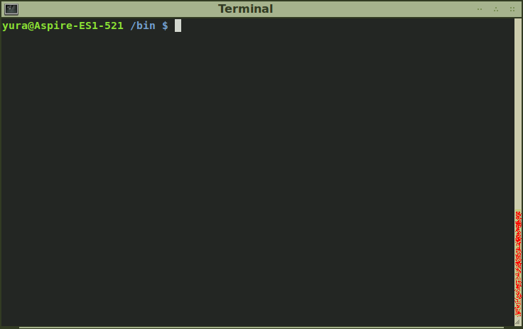
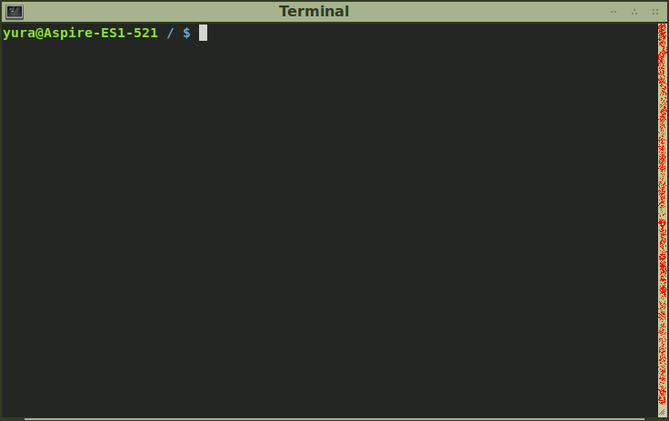
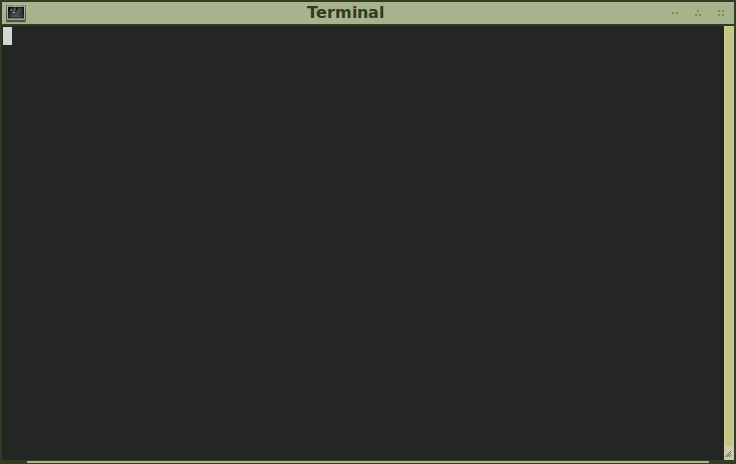
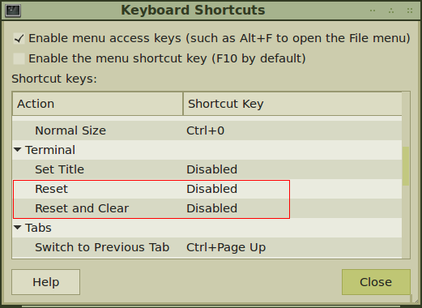
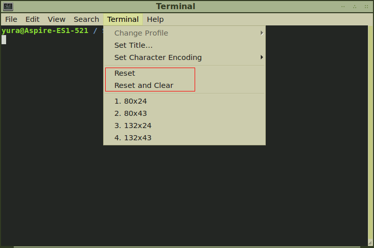

При работе в ОС Linux приходиться много времени проводить в консоли. Частенько хочеться очистить экран от вывода предыдущих команд, т.е. "начать с чистого листа" (но с сохранением истории команд). Ничего сложного в этом нет. Возможно, в конкретном эмуляторе терминала для этих целей выделена "горячая клавиша". Но нюансы всегда присутствуют. Ведь дьявол (и не только он), как известно, кроется в деталях.
Для очистки можно использовать команду с вполне предсказуемым названием: clear. Зайдем в
каталог /bin (там куча мелких файлов) и выполним команду ls. Затем очистим терминал с
помощью clear. Результат вышеописанных действий приведен на
рисунке 1.

Терминал стал чистым. Но не совсем. Обратим внимание на полосу прокрутки (ползунок оказался бледноват, так что я специально подкрасил его красным баллончиком): следы выполнения предыдущей команды никуда не исчезли. Просто терминал был промотан так, чтобы приглашение командной строки оказалось в самом его верху. Такой итог небесполезен, но я хотел добиться иного.
Команда reset очищает терминал более основательно. Ползунок в результате расползается на всю
полосу прокрутки, приглашение оказывается на первой строчке. И вообще, все выглядит так, как будто эмулятор
терминала закрыли и запустили снова (история команд, естественно, не теряется). Это можно наблюдать на
рисунке 2.

Но у команды reset есть недостаток: она очищает терминал с некоторой задержкой. Т.е. после
ввода команды и нажатия Enter и перед появлением приглашения командной строки в течение примерно
одной секунды "висит" полностью пустой терминал. Это приллюстрировано на
рисунке 3.

Из-за чего возникает задержка? Сложно сказать. Как говорится в man reset (tset и
reset - синонимы), Tset first determines the type of terminal that you are using. И
еще там написано про всякие порты, боды и т.п. Видимо, reset делает настоящую очистку, что
позволяет добиться одинаковых результатов не только в случае с эмуляторами терминала и виртуальными
консолями, но и в случае с аппаратными терминалами...
Вот эта команда мне по душе больше. Она делает то же самое, что и предыдущие две.
setterm -clear - это аналог clear, об этом прямым текстом сказано в
руководстве: Clears the screen and "homes" the cursor, as clear(1). Результат работы
setterm -clear приводить смысла нет, поскольку он такой же, как на
рисунке 1.
setterm -reset, в свою очередь, делает то же самое, что и reset, только мгновенно.
Команды reset и setterm -reset могут стать настоящими палочками-выручалочками в некоторых ситуациях. Например, вы решили вывести содержимое двоичного файла в терминал (либо какая-то программа взяла и напечатала в консоль что попало). В принципе, ничего страшного в этом нет. Но появление определенных символов (т.н. управляющих символов) в терминале приводит к непредсказуемым эффектам, от изменения начертания символов до неистового бибиканья. Самый верный способ избавиться от такого рода последствий - нажать Ctrl + C (на всякий случай), затем вслепую (терминал ведь "разрушен", мы ничего не увидим, когда будем печатать) набрать reset и жмякнуть Enter.
В случае с setterm -reset придеться дольше печатать, следовательно, больше вероятность
совершить ошибку. Да и выигрыша времени, по сравнению с reset, не будет. Здесь поможет алиас,
например, alias tclear='setterm -reset' (запомнить легко: "Total CLEAR")
[1].
Виртуальные консоли не так просты, какими кажутся [2]. Что мы делаем, если текст не помещается на один экран эмулятора терминала? Правильно, "крутим" экран вверх колесом мыши или с помощью полосы прокрутки. Но в виртуальной консоли никаких полос и прочих элементов управления нет (как и мыши). Но прокрутка есть. Чтобы прокрутить консоль на один экран вверх, нужно нажать Shift + Page Up, а чтобы прокрутить вниз - Shift + Page Down.
В эмуляторе терминала так тоже можно сделать. Только для этого нужно зажимать Ctrl + Shift + Page Up / Page Down. Еще в эмуляторе терминала возможно прокручивать текст плавно, т.е. построчно, с помощью комбинаций Ctrl + Shift + ↑ / ↓. Но в виртуальной консоли такой трюк не прокатит. Ни Shift, ни Ctrl + Shift в сочетании со стрелками не работают. Видимо, стандартного способа прокручивать виртуальную консоль построчно в Linux нет (tmux и screen - не в счет) [3].
Худо-бедно, но прокручивать текст в виртуальной консоли Linux возможно. Рассмотренные выше команды работают там точно так же, как и в эмуляторе терминала.
Во многих приложениях, построенных на библиотеке GTK, основные горячие клавиши одинаковые. Например, Ctrl + Page Up / Page Down в Mozilla Firefox служат для переключения между открытыми вкладками. Точно так же можно переключаться между вкладками в программе мгновенного обмена сообщениями Pidgin. Правда, не все "общие" сочетания клавиш удобны. Например, Ctrl + W служит для закрытия текущей вкладки. В то время как во многих других программах, в частности, текстовых редакторах, это сочетание клавиш используется для выделения слова под курсором. Частенько пишешь в Firefox в текстовое поле что-нибудь, хочешь выделить слово целиком, нажимаешь для этого Ctrl + W. И ррраз! Вкладка закрылась. И все пропало! Хорошо, если в обычную форму пишешь: браузер предупредит сначала. Но сейчас (в соответветствии с тенденциями в Web-разработке) мало кто делает формы как настоящие формы. Текстовое поле ввода, даже если выглядит как поле для текста, может быть чем угодно. Естественно, браузер не может разглядеть такие поля. Впрочем, современный способ "разметки" страниц - отдельная тема.
К счастью, в GNOME Terminal сочетания клавиш можно переопределить. Например, по-умолчанию комбинация Ctrl + D закрывает текущий эмулятор терминала. Но для этой цели лучше назначить сочетание Ctrl + F4 (такое же сочетание клавиш закрывает текущую вкладку в Firefox). А на Ctrl + D "повесить" что-нибудь более практичное. Например, Detach Tab (т.е. после нажатия Ctrl + D текущая вкладка превратится в отдельное окно; да, для этой цели можно использовать мышь, но это неудобно и медленно, да и запомнить новую комбинацию легко: D - мнемоника для "Detach").
Рассмотрим интригующие действия Reset и Reset and Clear в GNOME Terminal (см. рисунок 4).

Но прежде, чем назначать горячие клавиши, опробуем действия с помощью обычного меню, как на рисунке 5.

Reset ничего не делает. Т.е. вообще ничего не делает: вывод предыдущих команд не чистится, терминал не перематывается.
Reset and Clear ненамного лучше. Терминал становится чистым, приглашение командной строки исчезает (совсем как на рисунке 3), после чего пустой терминал висит и висит до тех пор, пока не нажмешь Enter (или Ctrl + C или еще что-нибудь в таком роде).
Так что эти фичи GNOME Terminal бесполезные. И назначать им горячие клавиши нет смысла.
Что тут сказать?.. Я выбираю setterm -reset в виде алиаса tclear :)
__________
↑
Вообще-то, клавишу Ctrl в сочетании с другими буквенными клавишами трогать, т.е.
переназначать функции таких сочетаний, нельзя. Так, Ctrl + C отправляет
процессу сигнал SIGINT, Ctrl + Z - сигнал
SIGSTOP. А Ctrl + D отправляет на стандартный ввода процесса
признак конца файла (EOF). Один из примеров его практического применения - выход из
интерактивной оболочки Python. Там как раз нужно вызвать функцию exit() или
отправить EOF. Наконец, нажатие Ctrl + D в самом
gnome-terminal приводит к закрытию окна консоли (но только если в командной строке нет
ничего, даже пробелов)!
↑ Внеший вид виртуальных консолей отличается от дистрибутива к дистрибутиву. В некоторых случаях мы можем надеятся на максимальное разрешение 640x480 (совсем как в DOS). Иногда приходиться сталкиваться с другой крайностью: в виртуальной консоли действует "родное" разрешение монитора (скажем, 1920x1080). Но шрифты по прежнему растровые, взятые исходя из разрешения 640x480. Буквы получаются настолько маленькие, что приходиться напряженно всматриваться в экран, пытаясь что-либо разобрать. Зато текста на один экран помещается много.
↑ Если, находясь в виртуальной консоли, активировать Scroll Lock (да, незаслуженно забытая клавиша), то ввод текста в консоль и вывод текста на экран приостановится, консоль как будто замрет (но программы продолжат выполнение). В виртуальной консоли Linux применение Scroll Lock, к сожалению, этим и ограничивается. Другое дело FreeBSD: находясь в режиме Scroll Lock можно прокручивать консоль плавно с помощью клавиш-стрелок.